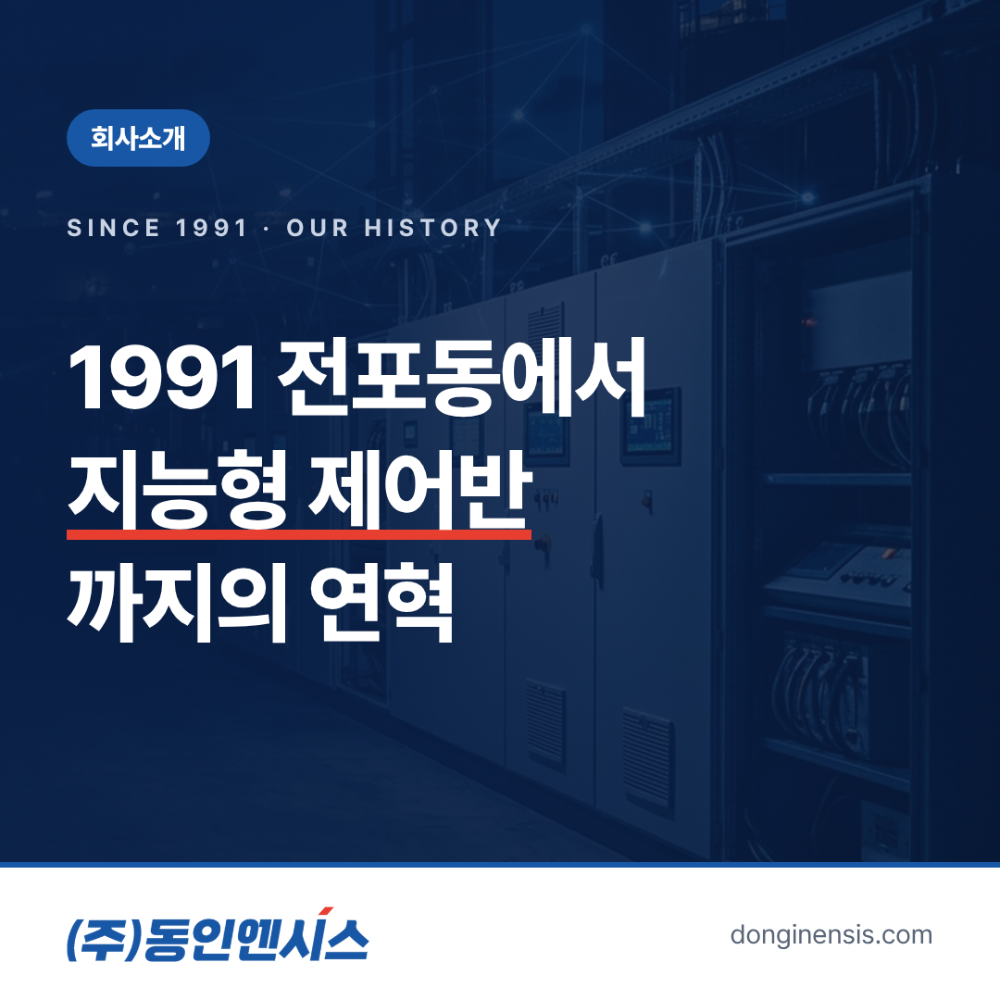
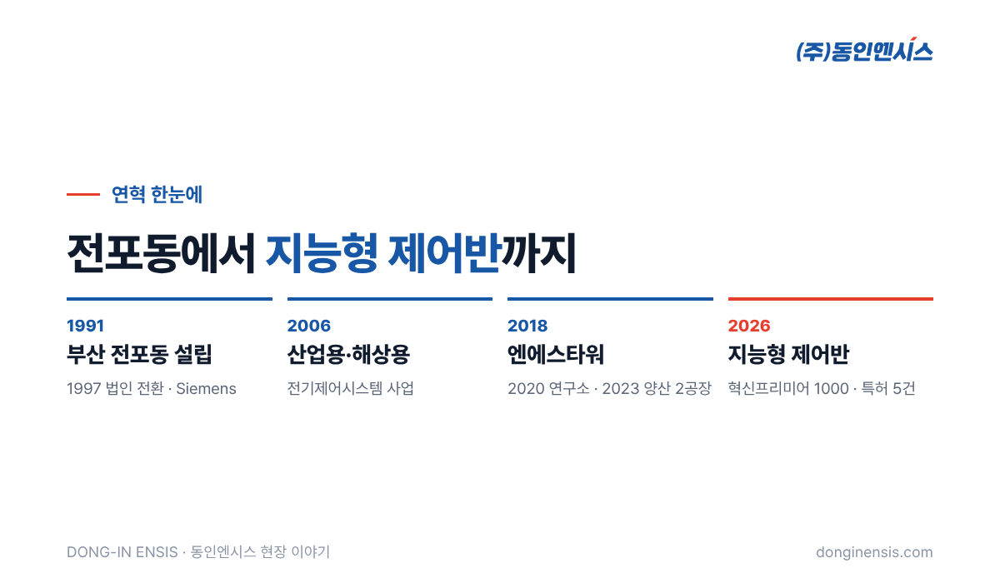
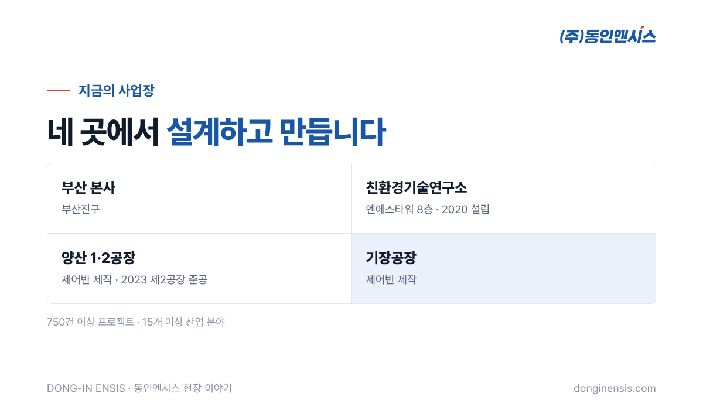

한 회사가 어떤 회사인지 알고 싶을 때 연혁만큼 솔직한 자료도 드뭅니다. 무엇을 언제 시작했고, 어디로 옮겼고, 어떤 현장을 거쳤는지가 날짜와 함께 남기 때문입니다. 부산에서 산업 설비와 선박의 제어반을 설계·제작하는 동인엔시스의 동인엔시스 연혁을 시기별로 묶어 정리했습니다. 지난번 회사 소개 글이 '왜 데이터 이야기를 시작했는가'였다면, 이번 글은 '언제 무엇이 있었는가'에 집중합니다.
35년 가까운 시간을 한 줄로 늘어놓으면 사건은 많은데 흐름이 잘 보이지 않습니다. 그래서 크게 네 시기로 나눠 보았습니다.
| 시기 | 한 줄 요약 |
|---|---|
| 1991~2005 | 부산 전포동에서 출발, 해외 제조사와의 관계를 쌓은 시기 |
| 2006~2017 | 산업용·해상용 전기제어시스템을 직접 만들기 시작한 시기 |
| 2018~2023 | 신사옥과 연구소, 공장을 갖추며 몸집을 키운 시기 |
| 2024~2026 | 인증과 선정이 이어지고 지능형 제어반을 내놓은 시기 |

출발은 1991년 10월, 부산 전포동이었습니다. 1997년 7월에는 법인으로 전환했습니다. 같은 해 Siemens Agency가 되었고, 2001년에는 Fuji Electric Agency가 되었습니다.
이 시기에 맺은 해외 제조사와의 인연은 30년 가까이 지난 지금까지 이어집니다. 오늘날 슈나이더 일렉트릭과는 공식 SI 파트너로, ABB·후지전기·이튼·댄포스와는 공급 파트너로 함께 일하고 있습니다. 대리점으로 출발해 시스템 통합 파트너가 되기까지의 흐름이 이 시기에 시작된 셈입니다. 제어반 안에 들어가는 PLC와 인버터, 차단기를 깊이 아는 것이 제어반을 잘 만드는 바탕이 되었습니다.
2006년은 연혁에서 방향이 크게 바뀐 해입니다. 이때부터 산업용과 해상용 전기제어시스템 사업을 본격적으로 시작했습니다. 공장 설비뿐 아니라 배 위의 설비까지 다루게 된 것입니다. 부품을 공급하는 쪽에서 그 부품으로 시스템을 설계하고 책임지는 쪽으로 무게중심이 옮겨 간 변화이기도 합니다.
해상용 제어시스템은 흔들림과 습기, 염분을 견뎌야 하고 선급의 도면 승인과 검사를 거쳐야 합니다. 이런 현장을 거치며 쌓은 설계 기준은 이후 수소충전소, 발전소 주변설비처럼 까다로운 현장으로 영역을 넓히는 디딤돌이 되었습니다. 지금까지 수행한 프로젝트는 750건을 넘고, 산업 분야로는 15개가 넘습니다.
2018년에 신사옥 엔에스타워로 옮겼습니다. 같은 해 품질경영(ISO 9001)과 환경경영(ISO 14001) 인증을 받았습니다. 일하는 공간을 새로 꾸리면서, 일하는 방식도 국제 기준에 맞춰 정리한 해였습니다.
2020년에는 기업부설연구소인 친환경기술연구소를 세웠습니다. 연구소는 엔에스타워 8층에 있습니다. 수소와 친환경 선박의 제어, 그리고 지금의 AI 예지보전 실증까지 이어지는 연구가 이곳에서 출발했습니다. 제조 현장의 경험을 기술 개발로 묶어 내는 창구가 생긴 셈입니다. 같은 해 Danfoss와 ABB Agency가 되었습니다.
2022년에는 해양수산부 국가대표 혁신기업으로 선정되고, 기술신용평가(TCB) T-4 등급을 받았습니다. 같은 해 4월부터는 해양수산부의 '안전기반 소형 수소추진선박 기술개발 및 실증' 과제에 참여해 통합제어·감시와 시스템 통합을 맡고 있습니다. 과제 기간은 2026년 12월까지입니다.
2023년은 현장의 결과가 눈에 보인 해였습니다. 4월에 환경정화선 경남청정호가, 8월에 충남병원선이 취항했습니다. 두 척은 엔진과 전기모터를 상황에 따라 나눠 쓰는 하이브리드 추진선으로, 크기는 각각 G/T 120톤급과 330톤급입니다. 같은 해 양산 제2공장을 준공했고, 부산시 히든챔피언과 서비스 강소기업으로 선정되었습니다.
Photorealistic photo of a modern mid-rise office building exterior in a Korean city (Busan-like urban street), glass and grey stone facade, clear afternoon sky, a few street trees, no visible signage, no brand logos, no readable text, no people in focus. 3:2 landscape.
2024년에는 부산시 전략산업선도기업과 지역특화 레전드50+, 고용노동부 강소기업으로 선정되었습니다. 2025년에는 안전보건경영(ISO 45001) 인증을 받고, 벤처기업·메인비즈·이노비즈 인증을 갖췄습니다. 2018년의 품질·환경 인증에 안전보건 인증까지 더해지며 세 가지 경영 체계 인증이 모두 갖춰진 셈입니다.
그리고 2026년, 지능형 제어반이 세상에 나왔습니다. 제어반이 설비를 제어하면서 운전 데이터를 함께 모아 서버로 보내는 제품입니다. 이해에는 굵직한 소식이 몰렸습니다. 산업통상자원부가 고르는 혁신프리미어 1000 명단에 이름을 올렸고, 스마트공장 공급기업 등록과 수소전문기업 등록을 마쳤습니다. 액화수소충전소 제어시스템 특허 5건도 이해에 등록되었습니다.

그 결과 지금의 사업장은 네 곳으로 나뉩니다. 부산진구의 본사, 엔에스타워 8층의 친환경기술연구소, 제어반을 만드는 양산 1·2공장과 기장공장입니다.
돌아보면 연혁에는 하나의 줄기가 있습니다. 부품을 깊이 알게 된 시기, 그 부품으로 공장과 배의 제어시스템을 만든 시기, 연구와 생산 기반을 넓힌 시기, 그리고 그 경험을 데이터로 잇는 시기입니다. 까다로운 현장에서 쌓은 제어 경험이 지능형 제어반의 데이터 신뢰성으로 이어진다는 것이 이 연혁이 말해 주는 바입니다.
Photorealistic wide photo inside a Korean electrical control panel manufacturing factory: rows of tall light-grey control cabinets under assembly, workbenches with wiring tools and cable reels, technicians in navy uniforms working in the distance, high ceiling with bright industrial lighting, no brand logos, no readable text. 3:2 landscape.
Q. 동인엔시스 연혁 전체는 어디서 볼 수 있나요? 홈페이지 회사소개 페이지에서 연도별 연혁과 인증 내역을 확인할 수 있습니다. 인증서와 특허, 회사소개서 파일은 홈페이지 자료실에 모아 두었습니다.
Q. 제어반은 어디서 만드나요? 양산 1·2공장과 기장공장에서 설계에 따라 제작하고, 공장 검사를 거쳐 현장에 설치합니다. 2023년 제2공장 준공으로 제작 공간이 넓어졌습니다.
Q. 지능형 제어반은 언제부터 공급하나요? 2026년에 출시해 공급하고 있습니다. 적용 가능 여부는 현장 조건을 보고 진단하며, 홈페이지에서 적용 가능성 진단을 신청하면 영업일 1~2일 안에 엔지니어가 회신합니다.
전포동의 작은 시작에서 네 곳의 사업장과 750건이 넘는 현장까지, 동인엔시스의 연혁은 제어반 한 대 한 대가 쌓여 만든 기록입니다. 그 기록 위에서 이제는 설비가 어떻게 돌았는지, 그 데이터까지 남기는 일을 하고 있습니다.
문의 051-862-3668 · dongin@donginmne.com
아래 질문 중 하나에 실제 경험으로 답해 본문 적당한 곳에 넣어 주세요. 사람이 직접 쓴 문장이 들어가면 네이버에서 저품질 위험이 줄고 노출에 도움이 됩니다.